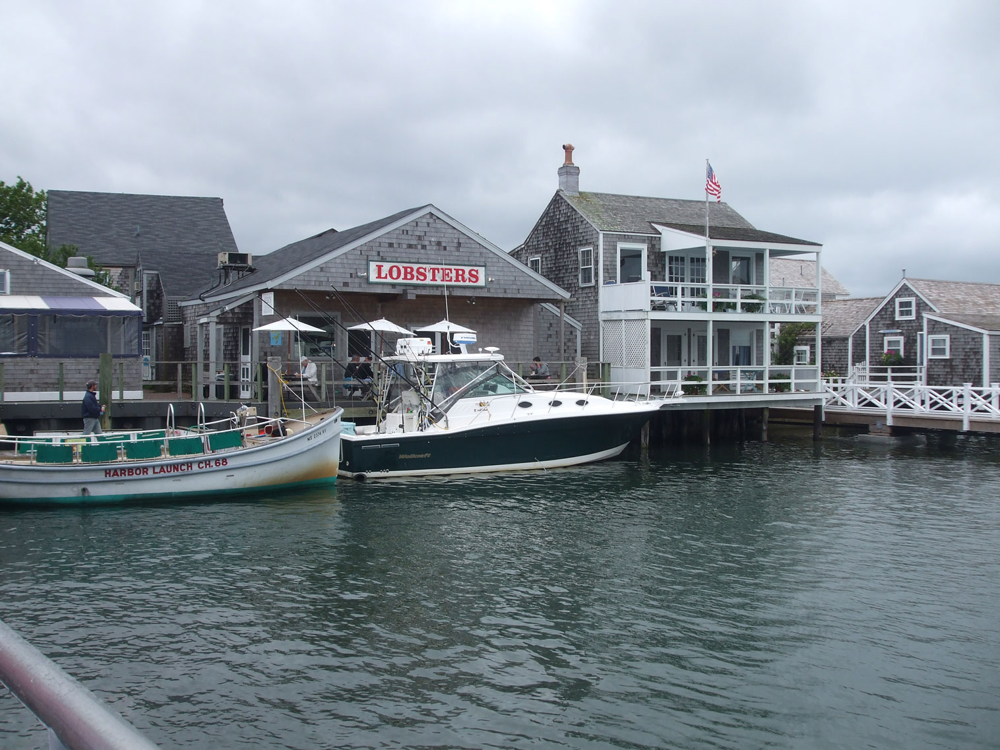
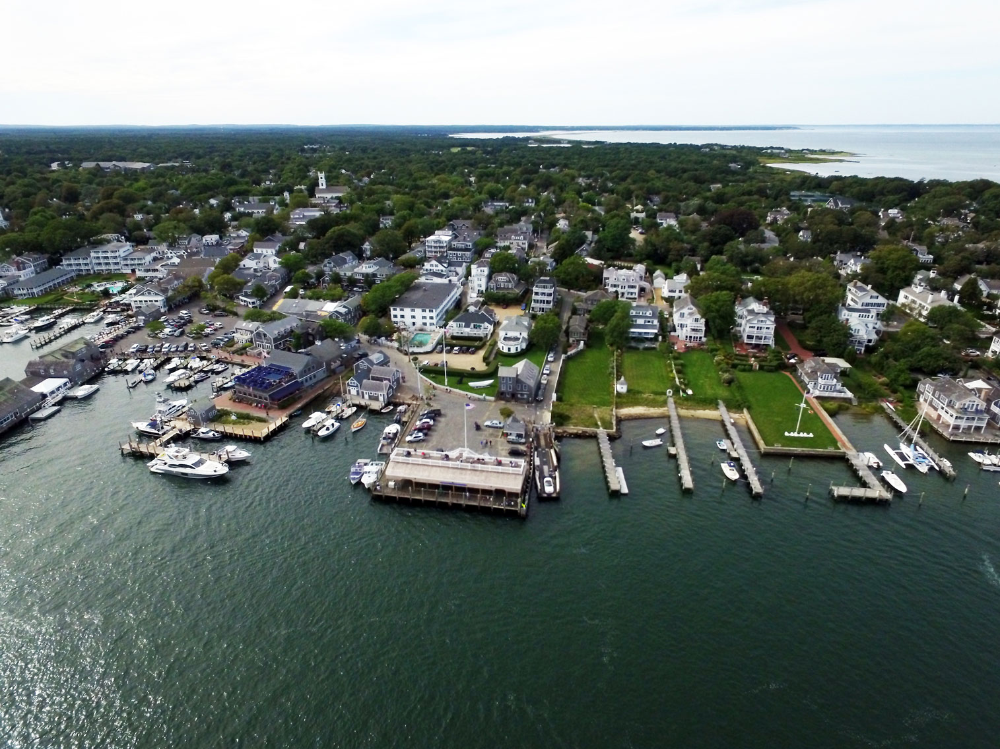

Massachusetts Travel Guide
Walk Boston's Freedom Trail, explore Cape Cod's beaches, and dive into Massachusetts' rich colonial history and vibrant college-town culture.
Massachusetts Map
Places to See in Massachusetts
John Phelan, CC BY 3.0, via Wikimedia Commons; Image Size Adjusted

Boston★
Capital and most populous city of Massachusetts is one of the oldest municipalities in the United States and the scene of several key events of the American Revolution.
John Phelan, CC BY 3.0, via Wikimedia Commons; Image Size Adjusted
Cape Cod★
Geographic cape extending into the Atlantic Ocean from the southeastern corner of mainland Massachusetts

Le grand Cricri, CC BY-SA 3.0, via Wikimedia Commons; Image Size Adjusted


Photograph by D Ramey Logan, CC BY-SA 4.0, via Wikimedia Commons; Image Size Adjusted

Martha's Vineyard★
Island located south of Cape Cod in Massachusetts that is known for being a popular summer colony
Teaperson, CC BY-SA 4.0, via Wikimedia Commons; Image Size Adjusted

National Protected Areas
Teaperson, CC BY-SA 4.0, via Wikimedia Commons; Image Size Adjusted
Landmarks and Landscapes
Overview
Massachusetts is a New England state of about 7 million people, rich in American history, universities, and coastal scenery. Boston is the capital and largest city, and the state is named for the Massachusett tribe. It is formally a commonwealth and is nicknamed the "Bay State."
Visitors come for Boston's Freedom Trail, Fenway Park, and universities, the beaches and villages of Cape Cod, Nantucket, and Martha's Vineyard, and Pilgrim history in Plymouth. Others come for the witch history of Salem, the Revolution at Concord and Lexington, and the hills and arts of The Berkshires.
Geography
Massachusetts has a varied landscape for a small state. The Atlantic coast includes Cape Cod, a glacial peninsula with dunes and beaches, and the islands of Nantucket and Martha's Vineyard. The central part of the state has rolling hills and the Connecticut River Valley, and the Berkshires in the west are an extension of the Appalachians. Mount Greylock, at 3,489 feet (1,063 m), is the highest point.
History
Wampanoag, Massachusett, Nipmuc, and other peoples lived here when Pilgrims landed at Plymouth in 1620 and Puritans founded Boston in 1630. Massachusetts led the American Revolution with the Boston Tea Party, and the war began at Lexington and Concord in 1775. It became the sixth state in 1788. In the 19th century it was a center of abolitionism, literature, and textile mills, and Harvard (1636) is the oldest university in the country. Boston is now a hub for education, health care, and technology.
Boston
Boston, the capital and largest city of Massachusetts, was founded by Puritans in 1630 and is one of the oldest and most walkable cities in the country. The 2.5-mile Freedom Trail links 16 historic sites, including the Massachusetts State House, the Old State House, the Boston Massacre Site, Faneuil Hall, the Paul Revere House, the Old North Church, and the Bunker Hill Monument. The Boston Tea Party Ships and Museum recreates the 1773 protest, and Boston Common and the Public Garden are the oldest parks in the country. Fenway Park, opened in 1912, is the oldest ballpark in Major League Baseball, and the city has the Museum of Fine Arts, the Isabella Stewart Gardner Museum, and the JFK Presidential Library. Across the Charles River, Harvard University and MIT make Cambridge a world center of learning. Boston is also known for clam chowder, lobster rolls, and cannoli.
Cape Cod and Provincetown
Cape Cod is a hook-shaped peninsula that extends about 65 miles into the Atlantic Ocean, with salt marshes, dunes, lighthouses, and charming villages. The Cape Cod National Seashore, established in 1961, protects 40 miles of beaches, ponds, and woods on the Outer Cape, including Marconi Beach, the Nauset Light, and Highland Light. Hyannis is the commercial center of the Cape and the base for the Kennedy family, with the JFK Hyannis Museum, while Sandwich, the oldest town on the Cape, has the Sandwich Glass Museum. Provincetown, at the northern tip, is where the Pilgrims first landed in 1620, before moving on to Plymouth, and the 252-foot Pilgrim Monument marks the spot. Today it is an artists' colony and one of the most visible LGBTQ+ vacation destinations in the country, with galleries, theaters, whale-watching trips, and dune tours. The Cape Cod Rail Trail is a favorite for cycling, and summer is the busiest season.
Martha's Vineyard and Nantucket
Martha's Vineyard and Nantucket are two islands off the south coast of Cape Cod that are among the most popular summer getaways in the Northeast. They are reached by ferry from Woods Hole, Hyannis, and other ports. Martha's Vineyard is the larger and more varied, with six towns, including Oak Bluffs, known for its colorful gingerbread cottages and the Flying Horses Carousel, Edgartown, with its sea captains' houses and Edgartown Harbor Light, and Aquinnah, with the colorful clay cliffs of Gay Head and the Wampanoag tribe. Nantucket, 30 miles out to sea, was the world's whaling capital in the 19th century, and the town's cobblestone streets, historic Greek Revival mansions, and gray-shingled cottages are preserved as a National Historic Landmark District. Both islands have bike paths, beaches, lighthouses, farm stands, and seafood restaurants, and they are very busy and expensive from July through Labor Day.
Plymouth
Plymouth is "America's Hometown," where the Pilgrims who sailed on the Mayflower settled in December 1620 and established the second permanent English colony in North America. The famous Plymouth Rock, a granite boulder said to be the landing place, is under a portico on the waterfront, and the Mayflower II, a full-scale reproduction of the ship, is docked nearby. Plimoth Patuxet Museums, a living-history museum, recreates both a 17th-century English village and a Wampanoag homesite with costumed interpreters, and Pilgrim Hall Museum, the oldest continuously operating public museum in the country, displays Pilgrim possessions. The National Monument to the Forefathers and Burial Hill honor the early settlers, and Thanksgiving, with its roots in the 1621 harvest feast, is central to the town's identity. Plymouth is also a popular spot for whale watching, beaches, and cranberry bogs.
Salem
Salem, on the North Shore, is best known for the Witch Trials of 1692, when 19 people were hanged and one was pressed to death after being accused of witchcraft. The Salem Witch Museum and the Witch House, the only structure still standing with direct ties to the trials, tell the story, and the Salem Witch Trials Memorial honors the victims. Salem is also one of the great maritime cities in American history, and the Salem Maritime National Historic Site preserves wharves, a customs house, and the tall ship Friendship. The Peabody Essex Museum has one of the best collections of Asian art in the country, and the House of the Seven Gables inspired Nathaniel Hawthorne's novel. October is the busiest month, as Salem becomes the nation's Halloween capital, and the city is easily reached by commuter rail from Boston.
The Berkshires
The Berkshires are the rolling hills and small towns of western Massachusetts, a region of forests, farms, and mountains, with a long history as a summer retreat for artists, musicians, and writers. Mount Greylock, the highest peak in the state at 3,489 feet, has the Appalachian Trail and a war memorial tower. Stockbridge is the home of the Norman Rockwell Museum, which has the largest collection of the artist's work, and nearby Lenox hosts Tanglewood, the summer home of the Boston Symphony Orchestra, and Jacob's Pillow dance festival is in nearby Becket. MASS MoCA in North Adams is one of the largest contemporary art museums in the country, and Arrowhead in Pittsfield is where Herman Melville wrote Moby-Dick. Bash Bish Falls and the scenic Mohawk Trail add natural beauty. Fall foliage is spectacular in October, and the region has skiing in winter.
Concord
Concord, about 20 miles northwest of Boston, is one of the most historically important small towns in America. The first battle of the American Revolution took place here on April 19, 1775, at the Old North Bridge, and Minute Man National Historical Park preserves the battle road, which runs from Concord to Lexington Battle Green, where "the shot heard 'round the world" was fired. In the 19th century, Concord became the center of the Transcendentalist movement, home to Ralph Waldo Emerson, Henry David Thoreau, Nathaniel Hawthorne, and Louisa May Alcott. Visitors can tour Emerson's house, the Old Manse, and Louisa May Alcott's Orchard House, where she wrote Little Women, and walk the shores of Walden Pond, where Thoreau lived in a cabin from 1845 to 1847 and wrote Walden. Sleepy Hollow Cemetery has "Authors' Ridge." The town is also known for the Concord grape, which was developed here.
National Protected Areas
Massachusetts has several national park sites. Cape Cod National Seashore protects 40 miles of dunes, beaches, and ponds, and Minute Man National Historical Park preserves the sites of the first battles of the Revolution. Lowell National Historical Park tells the story of the Industrial Revolution, Adams National Historical Park honors two presidents, and Boston National Historical Park includes the Freedom Trail. Salem Maritime and the John F. Kennedy birthplace are other sites.
State Parks and Historic Sites
Massachusetts has about 150 state parks. Bash Bish Falls is the highest single-drop waterfall in the state, Mount Greylock has an Art Deco war memorial tower on top, and Walden Pond State Reservation preserves the place where Henry David Thoreau lived. Walden Pond, Battleship Cove, and Plimoth Patuxet Museums are historical highlights, and the Cape Cod Rail Trail is a popular bike path.
Seasons and When to Visit
Summer is the peak season for the Cape and Islands, with warm beaches, ferries, and festivals, and for Boston's sailing and outdoor events. Fall brings brilliant foliage in the Berkshires and Pioneer Valley, plus Salem's Halloween season and the Head of the Charles regatta. Winter is cold and snowy, with skiing in the Berkshires, and Boston's holiday events. Spring has blooming magnolias and Patriots' Day with the Boston Marathon in April.
This article uses material from the Wikipedia article "Massachusetts", which is released under the Creative Commons Attribution-Share-Alike License 3.0. Additional information was drawn from National Park Service, Massachusetts Department of Conservation and Recreation, and Massachusetts Office of Travel and Tourism.